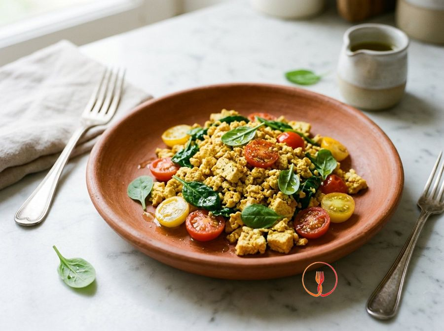

Tofu scramble
Plant-based alternative to scrambled eggs.
A flavorful and colorful plant-based alternative, perfect for a savory breakfast or a quick brunch. Crumbled tofu takes on a soft texture, enhanced by the savory taste of nutritional yeast.
Ingredients
- Firm plain tofu300 g
- Ground turmeric2 g
- Fresh baby spinach100 g
- Cherry tomatoes100 g
- Nutritional yeast flakes10 g
- Extra virgin olive oil15 g
- Fine salt2 g
- Unsweetened soy milk or water50 ml
- Ground black pepper0.5 g
Allergens
Soy
Method
- Thoroughly wash the spinach and cherry tomatoes; cut the tomatoes in half.
- Remove tofu from the package, pat dry with paper towels, and crumble it roughly with your hands or a fork to achieve an uneven, egg-like texture.
- Heat the extra virgin olive oil in a large non-stick skillet over medium-high heat.
- Add the cherry tomatoes and sauté for about 2 minutes until they start to release their juices and the skin appears slightly wilted.
- Incorporate the crumbled tofu and ground turmeric; stir well until the yellow color is evenly distributed.
- Pour in the soy milk (or water) and add the nutritional yeast; cook for 3 minutes, stirring to create a creamy emulsion that binds the tofu crumbles.
- Add the baby spinach and cover with a lid for 1 minute to allow the leaves to wilt quickly.
- Remove the lid, season with salt and black pepper, and sauté over high heat for the final minute to evaporate excess liquid while keeping the mixture moist.
- Serve immediately to preserve the texture and bright color of the vegetables.
Tips
- Pat the tofu dry with paper towels before crumbling to ensure a better, less watery final consistency.
- Crumble the tofu coarsely by hand to better mimic the irregular texture of traditional scrambled eggs.
- If the mixture looks too dry, add an extra tablespoon of soy milk at the end of cooking to soften it.
Variations
- Use Kala Namak black salt instead of regular salt to give the dish a distinct egg-like aroma.
- Add diced bell peppers along with the cherry tomatoes for a richer and crunchier version.
Nutrition facts (estimate)
| Per serving (245 g) | Per 100 g | |
|---|---|---|
| Energy | 913 kJ / 219 kcal | 373 kJ / 90 kcal |
| Protein | 14 g | 5.9 g |
| Carbohydrates | 5.8 g | 2.4 g |
| of which sugars | 1.5 g | 0.6 g |
| Fat | 15 g | 6.0 g |
| of which saturates | 2.1 g | 0.9 g |
| Fibre | 3.2 g | 1.3 g |
| Salt | 1.1 g | 0.45 g |
AI estimates based on average CREA / USDA data: indicative only, not a substitute for medical or dietitian advice.
Open the recipe in the app for the shopping list, ingredient sheets and nearby shops.